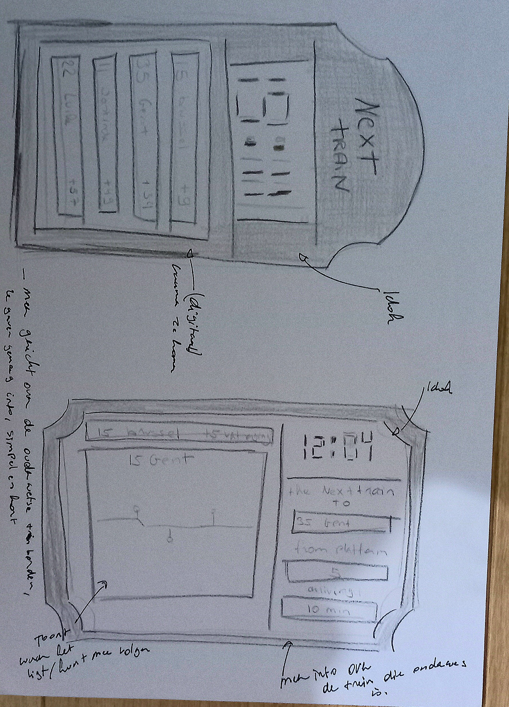
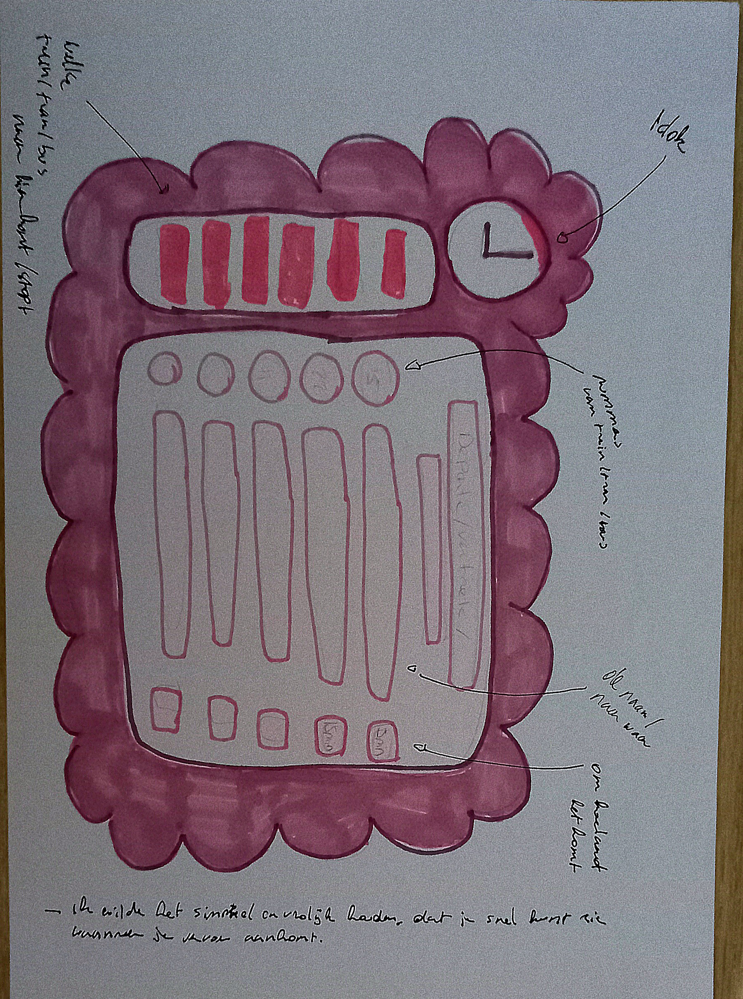
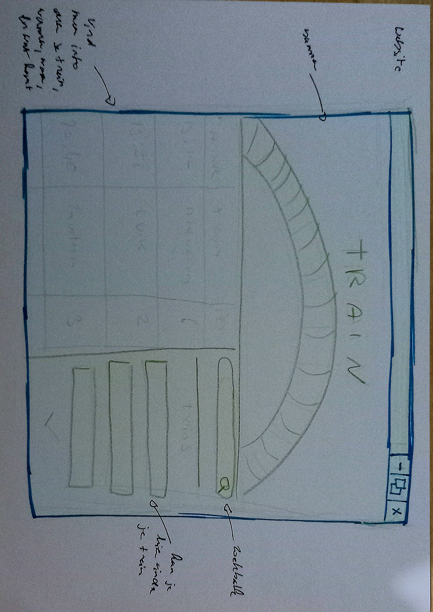

De focus lag op structuur en hiërarchie: welke informatie is het belangrijkst, hoe zorg ik dat meertaligheid (NL/FR/DE) duidelijk is, en welke iconen helpen de gebruiker.
Omdat dit low-fi prototypes zijn, gebruikte ik vooral schetsen op papier en eenvoudige wireframes.
Het doel was snel verschillende varianten uitproberen en knelpunten in bruikbaarheid ontdekken.
Door deze oefening heb ik geleerd hoe je een duidelijke visuele hiërarchie kan creëren, hoe iconen en taalkeuze de begrijpelijkheid beïnvloeden, en welke informatie reizigers het snelst nodig hebben.
Dit vormt de basis voor de verdere uitwerking naar mid- en high-fidelity prototypes.
Wat ik moeilijk vond
In het begin vond ik het best moeilijk om een goed ontwerp te bedenken voor de
treinschermen. Ik wist nog niet precies welke informatie op een treinbord hoort
te staan en hoe ik dat op een overzichtelijke manier moest ordenen.
Daardoor voelden mijn eerste schetsen rommelig en onvolledig aan.
Nu ik erop terugkijk merk ik hoe onzeker ik nog was over de juiste structuur
en welke elementen belangrijk waren.
Hoe ik hiermee omging
Om beter te begrijpen wat er op treininformatieschermen moet staan, heb ik
opzoekwerk gedaan. Ik bekeek echte perronschermen, zocht online voorbeelden
en vergeleek welke elementen steeds terugkwamen, zoals spoor, tijd, bestemming
en vertragingen. Door dat onderzoek kreeg ik langzaam meer ideeën en kon ik
mijn eerste low-fidelity schetsen beter onderbouwen.
Wat ik heb geleerd
Week 1 heeft me geleerd dat slechte schetsen eigenlijk heel normaal zijn.
Low-fidelity prototypes dienen om te experimenteren en te ontdekken wat werkt
en wat niet. Ik leerde dat:
- je begint met de belangrijkste informatie eerst te bepalen;
- iconen en taalkeuze een grote impact hebben op duidelijkheid;
- opzoekwerk en inspiratie zoeken een belangrijk deel is van ontwerp;
- het normaal is om in de eerste week onzeker te zijn over layout en structuur.
Dankzij deze stappen kon ik in de volgende weken steeds betere en
professionelere ontwerpen maken.
Low-fi prototype schets

Low-fi Prototype 1

Low-fi Prototype 2

Low-fi Prototype 3
×